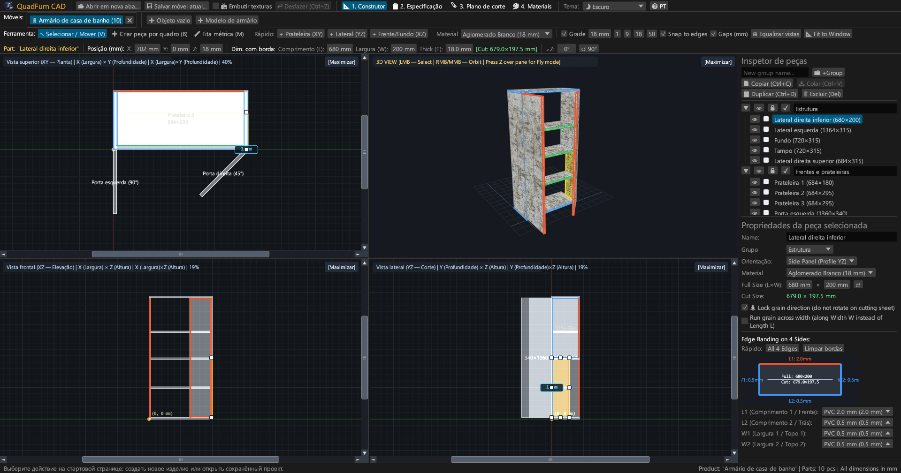
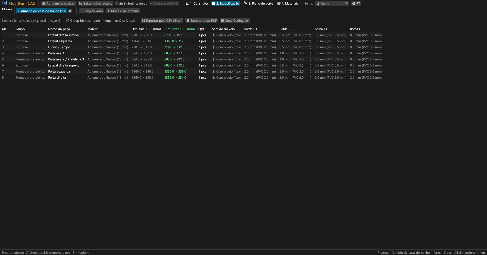
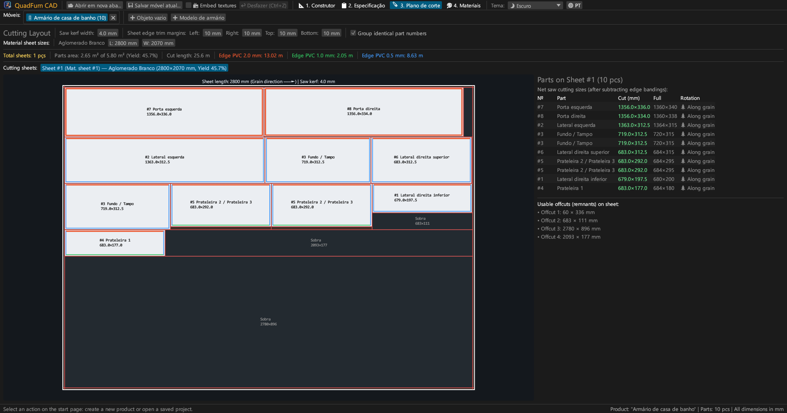
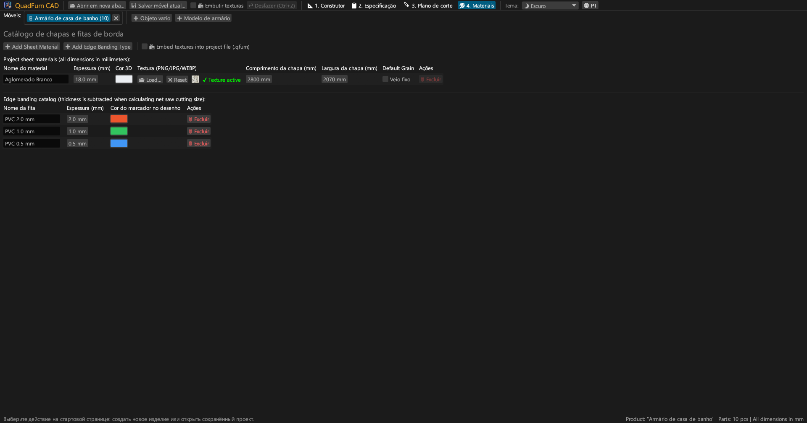
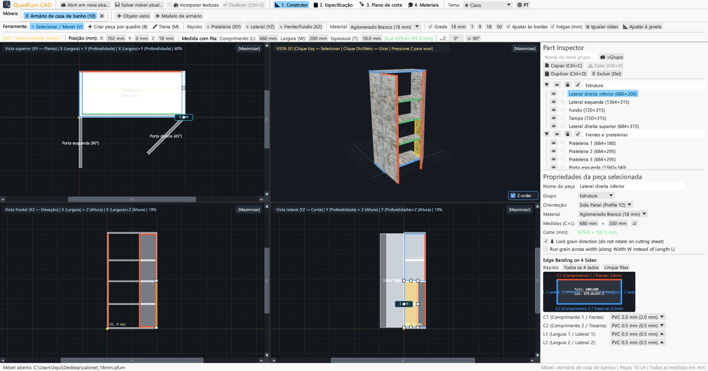
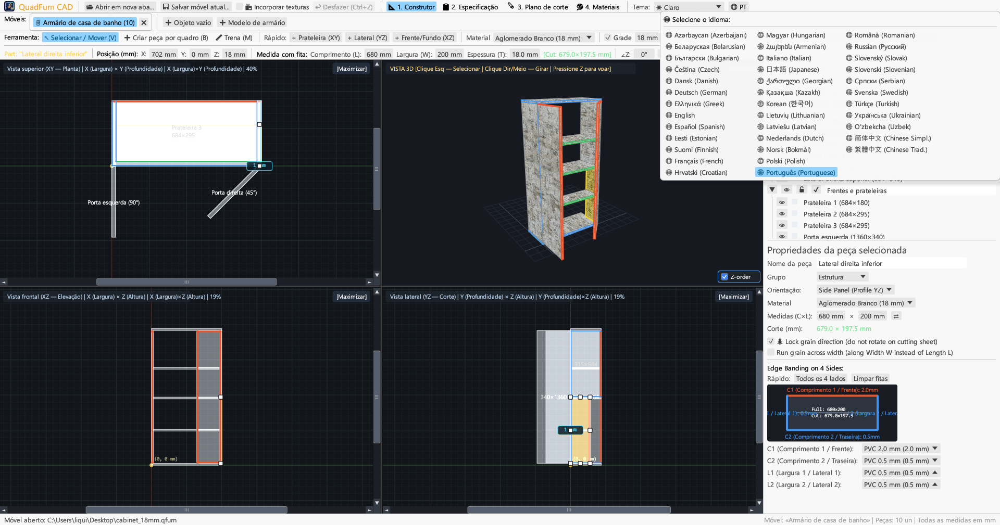

CAD de alto desempenho para marceneiros. Modelação em 4 vistas sincronizadas, barra de transformação com calculadora, dedução de orlas e plano de corte.

Reúne desenho em 4 vistas, controlo numérico direto e otimização de corte numa única aplicação.
Edição simultânea em Planta (XY), Alçado (XZ), Secção (YZ) e 3D com barras de deslocamento, atração magnética e cotas dinâmicas.
Entrada direta de coordenadas (X, Y, Z), dimensões (L × W × T) e rotação com calculadora integrada (ex. 600-4 ou (800-36)/2).
Atribuição de orlas PVC/ABS (0,4–2,0 mm) aos 4 lados para calcular as medidas exatas de corte bruto na serra.
Otimizador de corte que respeita o veio da madeira, largura da serra (4,0 mm), refilos e controlo de sobras úteis.
Trabalhe em vários móveis simultaneamente. Copie e cole peças entre separadores com transferência de materiais.
Exportação em A4 Horizontal: lista de peças, desenhos em 4 vistas, esquemas de corte e resumo de materiais com +15% de margem.





Binários autónomos sem dependências externas.
Executável portátil com ícone, sem necessidade de instalador.
sudo apt install ./quadfurn_0.2.4_amd64.deb
Pacote Universal para Apple Silicon (M1–M4) e Intel x86_64.
| Tecla | Ação | Âmbito |
|---|---|---|
| V | Ferramenta Selecionar / Mover (8 manipuladores, seleção por caixa) | Vistas 2D |
| B | Criar peça por caixa no plano ativo | Vistas 2D |
| M | Fita métrica (medição exata de distâncias em mm) | Vistas 2D |
| Z | Modo voo livre em primeira pessoa (Noclip com WASD) | Janela 3D |
| ← → ↑ ↓ | Deslocar peças por passo de grelha (Shift para passo duplo) | Vistas 2D |
| Ctrl + C / V | Copiar / colar peças (entre separadores) | Todos os separadores |
| Ctrl + D | Duplicar peças selecionadas com desvio | Projeto ativo |
| Ctrl + S | Guardar projeto em ficheiro .qfurn / .json | Projeto ativo |
| Ctrl + Z | Desfazer última ação (até 40 passos) | Projeto ativo |
| Delete / Backspace | Eliminar peças selecionadas | Projeto ativo |